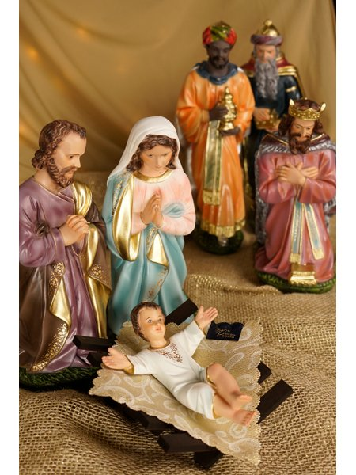
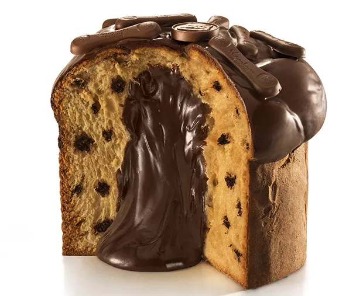
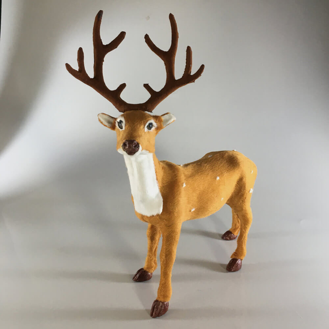

O Natal é atualmente uma das grandes festas religiosas do Ocidente. Sua comemoração tem características em comum, mas, claro, também incorpora especificidades de região para região. Os símbolos natalinos são parte importante da tradição natalina e possuem tanto origens cristãs quanto origens pagãs.
Os símbolos natalinos foram surgindo em diferentes momentos da história, mas remontam, principalmente, à Idade Média e à Idade Moderna, períodos em que o Natal já tinha ganhado uma importância considerável no calendário litúrgico do cristianismo.
|
|
Foi inspirado no bispo Nicolau, de Myra, Turquia, no século 4. Nicolau costumava ajudar, anonimamente, quem estivesse em dificuldades financeiras. Colocava o saco com moedas de ouro a ser ofertado na chaminé das casas. Foi declarado santo depois que muitos milagres lhe foram atribuídos. A transformação em símbolo natalino aconteceu na Alemanha. A figura do Papai Noel que conhecemos hoje foi obra do cartunista Thomas Nast, na revista Harper's Weeklys, em 1881. |
| A maioria das versões sobre a procedência da árvore de Natal indica a Alemanha como país de origem. A mais provável atribui a novidade ao padre Martinho Lutero, autor da reforma protestante do século 16. Ele montou um pinheiro enfeitado com velas em sua casa para mostrar às crianças como deveria ser o céu na noite do nascimento de Cristo. | |
|  | São Francisco de Assis foi o criador da missa do galo. São Francisco construiu o primeiro presépio para lembrar fiéis do ambiente em que jesus vivia. Foi em Greccio, na Itália, em 1224. Ele exibia o presépio à meia-noite, a hora simbólica do nascimento. O ato era seguido de uma missa. Como os galos cantavam às primeiras horas da madrugada e isso acontecia durante a solenidade, o povo deu à celebração o nome de "missa do galo". |
| Cristóvão Colombo conheceu o peru quando chegou à América. Ele acreditava estar chegando às Índias por um novo caminho. Por isso, o peru ficou conhecido na Itália como "gallo d'Índia" (ou dindio/dindo); na França, como "coq d'Índe" ou "dinde"; e na Alemanha, como "calecutischerhahn", em referência a Calcutá. Em 1549, foi oferecido à rainha Catarina de Médicis, em Paris. No banquete foram servidas cem aves (70 "galinhas da Índia" e 30 "galos da Índia"). Era tão apreciado que se tornou o símbolo de alimento das grandes ocasiões. | |
| O primeiro cartão de Natal surgiu na Inglaterra em 1845. John Calcott Horsley desenhou uma família ao redor de uma mesa farta e colocou, ao lado, um rico dando comida a crianças pobres. Havia a mensagem, em inglês, de "Feliz Natal e Próspero Ano Novo para você". Horsley fez o cartão sob encomenda de Henry Cole, diretor de um museu, que imprimiu mil cópias. | |
|
|
Na Europa, antigamente, as pessoas deixavam a porta de casa aberta na noite de Natal para que viajantes e pessoas pobres pudessem participar da ceia. Até hoje, a ceia é confraternização. No Brasil, o prato mais tradicional é o peru assado. |
|  | Foi criado em Milão, na Itália, não se sabe ao certo por quem. Existem três versões. A primeira é que o produto nasceu no ano 900, inventado por um padeiro chamado Tone. Por isso, o bolo teria ficado conhecido como pane-di-Tone. A segunda diz que o mestre-cuca Gian Galeazzo Visconti, primeiro duque de Milão, preparou o poduto para uma festa em 1395. E a última versão onta que um certo Ughetto resolveu se empregar numa padaria pra poder ficar pertinho da sua amada Adalgisa, filha do dono. Ali ele teria inventado o panetone, entre 1300 e 1400. Feliz com a novidade, o padeiro permitiu que Ughetto se casasse com Adalgisa. No Brasil, a tradição surgiu depois da II Guerra Mundial. Imigrantes italianos resolveram fazer o mesmo panetone consumido por eles na Itália na época de Natal. |
| Em dezembro, na festa romana que honrava o rei Saturno, eram distribuídos presentes. No século14, no dia 5 de dezembro, as crianças comemoravam o dia de São Nicolau, colocando os sapatos na janela e recebendo presentes. | |
|  | Rudolph é o nome da mais conhecida rena do trenó de Papai Noel. No Brasil, não existem renas. Elas vivem em regiões frias, como a Escandinávia, a Groenlândia e a Sibéria, onde os termômetros, no inverno, costumam atingir até 50 graus abaixo de zero. |